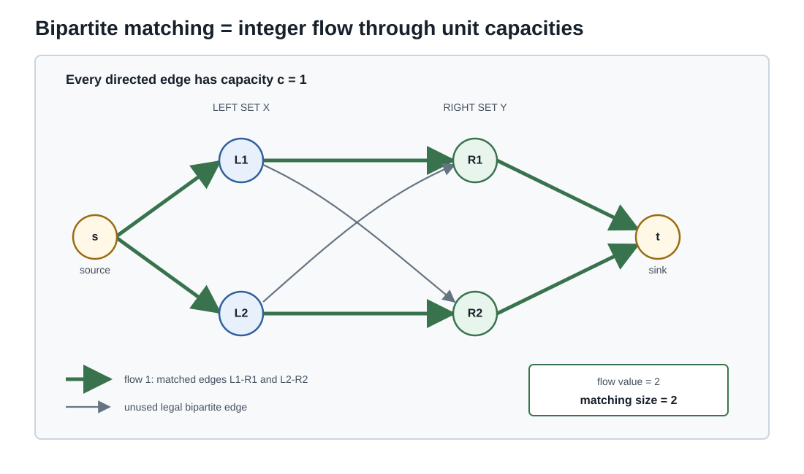

图论与组合 III · 匹配、网络流与图上的算法
收官页三大块：匹配（Hall 婚配定理——"什么时候人人有对象"）、网络流（最大流最小割——LP 对偶在离散世界的加冕礼，优化 IV 的欠条在此清偿）、以及图上的算法与随机游走（PageRank 与 Markov 链的会师）。图论在此从"结构的描述"升级为"资源的调度"。

1. 二部图匹配与 Hall 定理
匹配：两两不共顶点的边集；完美匹配：盖住一侧全部顶点。场景原型：人-岗位、课程-教室、器官捐献配对。
定理（Hall 婚配定理，1935） 二部图 \((X, Y)\) 存在盖住 \(X\) 的匹配 \(\iff\) 任何 \(S \subseteq X\) 的邻域满足
（"任何 \(k\) 个姑娘合起来认识至少 \(k\) 个小伙"——没有任何一群人被挤在过窄的选择里。）必要性显然；充分性的经典证法是增广路：未匹配点出发交替走"非匹配边/匹配边"，找到增广路则翻转它使匹配 +1——这个算法思想同时是匈牙利算法与下节最大流的引擎。
König 定理（二部图）：最大匹配 = 最小顶点覆盖——第一对"最大 = 最小"对偶（下节是它的推广），也是 LP 对偶在二部图上恰好整数可解的体现。
2. 网络流：最大流 = 最小割
设定：有向网络，源 \(s\) 汇 \(t\)，边有容量。流：不超容量、中间点守恒；割：分离 \(s, t\) 的边集，容量 = 跨割边容量和。显然任何流 ≤ 任何割（流必须穿过割——弱对偶，一行）。
定理（最大流最小割，Ford–Fulkerson 1956）
算法即证明：反复找增广路（残量网络中 \(s \to t\) 的可行路径，含"退流"反向边）提升流量；找不到时，\(s\) 可达集与其余的割恰好被流填满——该流与该割互证最优。\(\blacksquare\)
三重读法：LP 强对偶的组合化身（流 LP 的对偶恰是割 LP，且此处整数解免费——优化 IV 影子价格在此变成"瓶颈边"）；瓶颈定律（系统吞吐由最窄截面决定——供应链、带宽、人力的通用诊断语言）；归约枢纽——二部匹配（Hall/König 是其特例：源连 \(X\)、\(Y\) 连汇、容量全 1）、项目选择、图像分割（视觉里的 graph cut）都化归最大流。
3. 最短路与图算法速查
| 问题 | 算法 | 思想 | 复杂度级 |
|---|---|---|---|
| 单源最短路（非负权） | Dijkstra | 贪心扩张最近点（贪心正确性=非负权下"最近点不会被绕路改进"） | \(O(E\log V)\) |
| 单源（可负权） | Bellman–Ford | DP 松弛 \(V-1\) 轮（优化 IV Bellman 方程的原产地） | \(O(VE)\) |
| 全对 | Floyd–Warshall | 三重循环 DP（"允许中转点集逐个扩大"） | \(O(V^3)\) |
| 遍历/连通性 | BFS/DFS | 层序/深探（无权最短路 = BFS） | \(O(V+E)\) |
图着色一嘴：色数 \(\chi(G)\)（相邻异色的最少颜色）；贪心给上界 \(\Delta + 1\)（最大度+1）；判定 \(\chi \leq k\)（\(k\geq3\)）NP-完全。应用原型：排考试（冲突课程异时段）、寄存器分配——"冲突图 + 着色"是资源互斥调度的通用模板。
4. 随机游走与 PageRank（三门课会师）
图上随机游走：每步等概率走向邻居——图上的 Markov 链（转移矩阵 \(P = D^{-1}A\)）。连通非二部图 ⇒ 平稳分布存在唯一（随机过程页的遍历定理），且无向图的平稳分布 \(\pi_v \propto \deg(v)\)（度大者常驻）。
PageRank：网页 = 顶点、链接 = 有向边，重要性 = "随机冲浪者"的平稳分布（阻尼 \(\alpha \approx 0.85\)：以 \(1-\alpha\) 概率随机跳跃——保证遍历性，修掉死胡同与周期陷阱）：
求解 = 幂法迭代（数值线的幂法 + 随机过程的平稳分布 + 本页的图——三门课在一个改变互联网的公式里会师）。谱隙决定收敛速度（那句"第二特征值统治一切"第五次出场）。
🔗 现代出口一瞥：图神经网络（GNN）= "邻居聚合"的可学习版（消息传递 ≈ 随机游走算子的参数化）；知识图谱/因果图（Medusa 的因果网正是带类型边的有向图，中心性/连通分量分析直接可用）；谱聚类 = 图 Laplacian 的特征向量（高代谱理论 + 本页）。
5. 典型例题
例 1（Hall 判定） 4 名学生各会做题集 \(\{1,2\}, \{2,3\}, \{1,2\}, \{2\}\)，能否每人分一道不同的题？取 \(S = \{1, 3, 4\}\)（会 \(\{1,2\}, \{1,2\}, \{2\}\)）：\(|N(S)| = 2 < 3\)——Hall 条件破产，无解；且指出了病灶（这三人挤在两道题里）。Hall 定理的价值：不可行时给出"证据"。
例 2（最大流手算） 菱形网络：\(s\to a\)(3), \(s\to b\)(2), \(a\to b\)(1), \(a\to t\)(2), \(b\to t\)(3)。增广 \(s a t\)(2)、\(s b t\)(2)、\(s a b t\)(1)：总流 5；割 \(\{sa, sb\}\) 容量 \(= 5\) 相等 ⇒ 双双最优 ✓。
例 3（PageRank 直觉） 三页环 \(A\to B\to C\to A\) 加一条 \(B\to A\)：无阻尼时求 \(\pi P = \pi\) 得 \(\pi \propto (2, 2, 1)\)（\(C\) 只有一票来源）——链接结构即投票结构；加阻尼后数值微调但排序不变。\(\blacksquare\)
扩展线收束
五门扩展课与主站的接线图：信息论把"熵/KL/交叉熵"的借条全部收回（概率→AI 的桥）；随机微积分让布朗运动（随机过程）同时流向期权定价（金融）与扩散模型（AI）；时间序列给 Medusa 式预测立了统计军规；图论与组合补齐离散半壁，并让 LP 对偶、Markov 链、幂法在离散世界再就业；博弈论把优化、概率与多智能体决策接起来。至此全站 22 门课，每一页都不是孤岛。